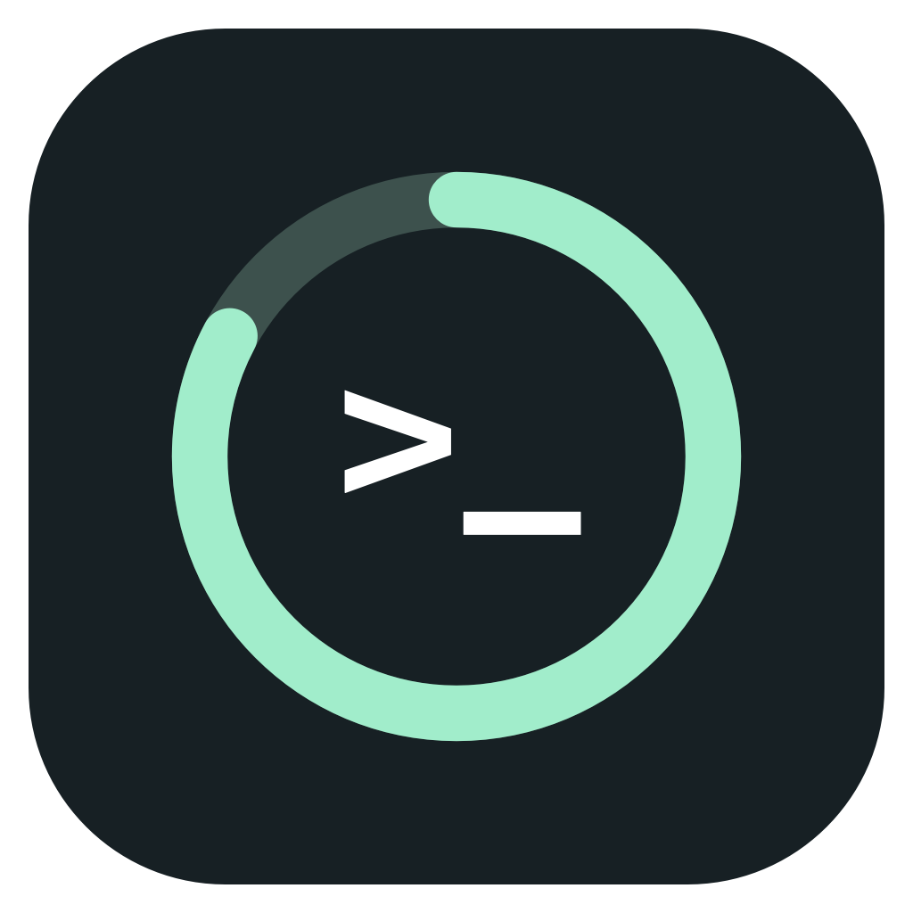

Usage you can read at a glance
See your remaining allowance as a percentage. When the five-hour window is available, a countdown tells you when it resets.

Token Codex InfoA SMALL UTILITY FOR YOUR MAC
Keep your Codex usage in sight, without breaking your flow. Remaining usage and reset times, right in your menu bar.
Download for macOSmacOS 14+ · Apple Silicon & Intel · Version 1.0.0
Built for the menu bar.
Reads local Codex data.
No API key needed.
LESS CHECKING. MORE CREATING.
A quiet companion for your Codex sessions. The information you need, in the corner of your screen.
See your remaining allowance as a percentage. When the five-hour window is available, a countdown tells you when it resets.
If Codex only provides a weekly limit, the app shows your weekly allowance and reset date instead.
A native menu bar app with Launch at Login, a manual refresh, and no extra window to keep open.
THE FAMILIAR MAC WAY
Download the disk image, open it, and drag Token Codex Info into Applications. Then launch it from there. The first-run checker helps you connect your local Codex data.
Installation preview. Install the app in the downloaded DMG.
Drag to install.
A small app. A familiar gesture.
Then open the app from Applications.
GOOD TO KNOW
The app reads Codex session files and databases already on your Mac. It does not make network requests or ask for an API key. Use Codex on the same Mac to keep those snapshots up to date.
Usage updates when Codex writes a new local snapshot. If precise limits are unavailable, the app may fall back to token-based estimates. Estimates are marked ≈. If data is missing or access is denied, the app shows a clear status instead of 100%. Open Data & Settings to choose a folder or check again.
The current build is ad-hoc signed and has not been notarized by Apple. After trying to open a build you trust, go to System Settings → Privacy & Security and choose Open Anyway if offered. No security settings need to be disabled.
No. Token Codex Info is an independent utility by vik1eigh. It is not affiliated with or endorsed by OpenAI.
BACK TO YOUR FLOW
One small addition to your menu bar.
Download for macOSmacOS 14 Sonoma or later · Universal app